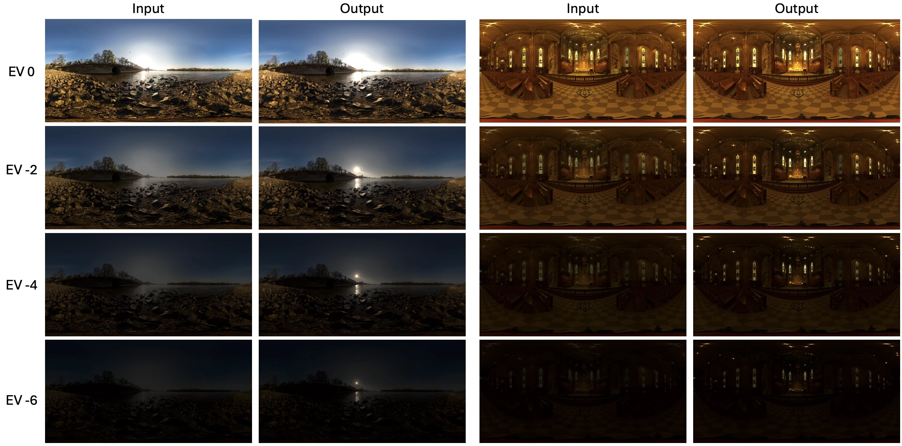
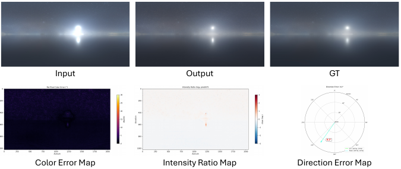
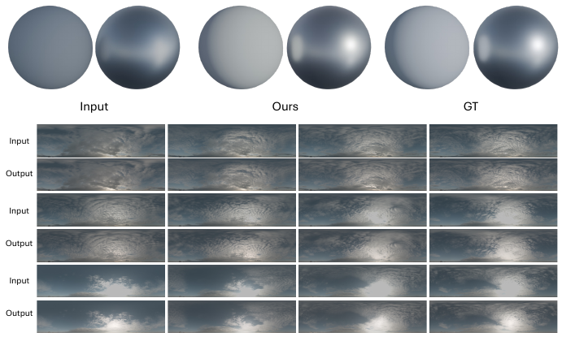

Low-frequency response
Diffuse SH loss
Compares 27 second-order spherical-harmonic coefficients in log space, directly supervising irradiance and global energy.
Ldiffuse = Δ(log(1 + cSH))²
SIGGRAPH 2026 Posters
with Rendering-Space Losses
We recover clipped illumination in casual panoramas by training a video diffusion model with losses that measure what matters: the light an HDRI produces.
HDRIs are the standard light sources for image-based lighting, yet casual LDR panoramas clip precisely where the most important illumination lives. Saturated highlights erase light intensity, color, and direction—errors that become obvious when the panorama lights a virtual scene.
Our method promotes a clipped panorama to linear HDRIs. A fine-tuned Wan 2.1 VACE 14B model reconstructs saturated regions, while diffuse spherical-harmonic and glossy GGX losses directly supervise its image-based lighting behavior.
Two complementary lighting objectives guide the model from a clipped panorama to a useful HDR light source.
Low-frequency response
Compares 27 second-order spherical-harmonic coefficients in log space, directly supervising irradiance and global energy.
Ldiffuse = Δ(log(1 + cSH))²
Higher-frequency response
Compares prefiltered specular lobes over 64 × 128 HDRI maps, preserving sharp highlights and reflection response.
Lglossy = ‖Δ(log(1 + EGGX))‖²
The recovered panoramas match ground-truth lighting across exposure, dominant direction, diffuse shading, and specular reflection.
Across a six-stop exposure sweep, the output restores structured light sources that remain visible and correctly placed at darker exposures.


The reconstructed dominant light closely matches the ground truth in intensity, chromaticity, and angular position.

Relit objects recover the illumination strength, shadowing, and reflections missing from the clipped input.
Input, prediction, and ground truth are compared across panorama exposure sweeps and rendered scenes.
SIGGRAPH 2026 Posters
@inproceedings{yu2026promoting,
title={Promoting LDR Panoramas to HDRI
with Rendering-Space Losses},
author={Yu, Zhengming and Ma, Li and He,
Mingming and Zhang, Jingdong and Wang,
Jionghao and Yu, Ning and Debevec, Paul},
booktitle={SIGGRAPH Posters},
year={2026}
}